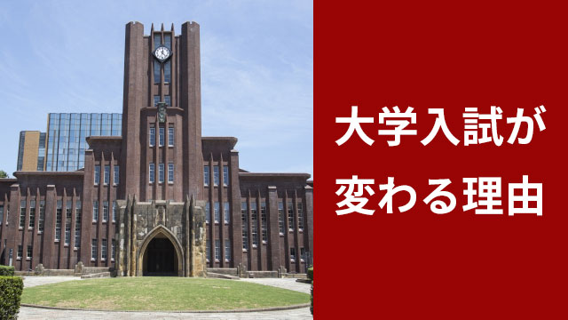

2020年から大学入試が大きく変わることは、これまでも何度かお話ししてきました。
それでもなぜこの時期大きく大学入試が変わるのか、その意味するところはまだまだ一般に理解されていません。
まして小学校から高校に至るまで授業の在り方や、求められる学力そのものが大きく変わる理由となると、ピンとこない人が多いのではないのでしょうか。
そこで今回はそれらの背景と新しい学力が求められる理由、そして日本の教育はどこに向かおうとしているのかについて、思い切って分かりやすく説明してみたいと思います。
あくまで分かりやすさを優先するのでザックリとした説明になります。
大学入試が変わる背景と理由
まず背景その1として世界のグローバル化があります。いま世界は産業（企業）や経済、科学技術、学問研究といった領域で国境を超えた熾烈な競争が行われています。
そしてこれらの領域では、この激しい国際競争を勝ち抜くためにこれまた国境を超えた人材の獲得競争が起こっています。
そしてこの「人材供給」の場としての大学の在り方がいま問い直されているのです。
なので背景その2として、世界中の大学が「優秀な人材」を集めるために競争しているということ。すなわち大学の教育の質を上げること。研究の成果を上げること。それによって優秀な人材を確保し、育て上げ名だたる企業へ送り込み、さらにより優秀な学生を世界中から集めるという、大学のグローバル化が進んでいる現実があるわけです。
ところが現状を見ると、この大学のグローバリズムにおいて日本は完全に立ち遅れていること。教育システム、カリキュラム、学生の質、研究教育の充実度いずれにおいても国際化へ対応できていないことが明らかになっているのです。
要するに日本の大学はグローバル化に対応できず、世界における大学間競争に大きく遅れをとっている。それはやがて日本の国際競争力自体にはね返ってくるだろうということ。
それが大学入試改革の大きな理由だということです。
2020年以降大学入試はより本質的な学力―単なる覚えた知識量ではなく思考力、発想力、問題解決力、記述力―を問うものになるのも、世界標準の力を求めているからです。
日本の大学の問題点
ところで日本の大学がなぜそれほど国際化に対応していないのか。その辺をこれまたザックリ話してみます。
まず日本の大学は昔も今も「教育が行われていない」という点です。いや、ちゃんと授業はあるしゼミだってある。卒論もあるし…と言うかもしれません。
それなら大学を出た人に聞きますが、あなたは大学時代1日に何時間くらい勉強していたでしょうか。
多くの教科で毎週レポートは課せられましたか。そのための文献や資料作成に一週間で20時間くらい勉強していたでしょうか。
大学側は一定水準に満たない学生を毎年どのくらい「退学させて」いたでしょうか。
おそらくほとんどの人は今の質問に「NO」ではないでしょうか。
たとえば欧米の名門といわれる大学では、上のような例はふつうですし、大学の要求するレベルに達しない人は卒業できないのが常識です。
日本の大学は基本的に入ったら勉強しなくてもそのまま卒業できるし、就職も成績を問われることはありません。
日本では大学時にどんな学問（研究）をやり、どんな成果を上げたかを問われることはなくどんな大学を出たかが重要だからです。
入試の難易度（偏差値）によって大学がランク化されていて、いわゆる名門（有名）大学を出ているかどうかで就職の有利不利が色分けされていても、実際その学生の実力（大学に入ってからの伸び）は問われてこなかったのです。
つまり大学名というランクは高校までの勉強成果を知る手がかりにはなる―つまり受験のための勉強はやった証拠になる―が大学で学問をしっかりやったかどうかまでは分からない。大学で付加価値をどのくらいつけたかは分からないのが日本の大学の大きな特徴です。
だから学生も高校までは ―大学に入るために― 一生懸命勉強するが、大学に入ったら必死でやる必要はなくあとはバイトに精を出しながら何とか卒業できれば良いとしてきたわけです。
大学はレジャーランドであり就職までの息抜きの場でもあった。学問研究など誰も真剣に考えていない。
それが正直なところではないでしょうか。
たとえ日本の有名大学を出ても学生の学力レベルは世界標準に程遠いのが現状なのです。
グローバル化は第2の開国
これは大学のシステム自体の問題でもあります。大学の教官は基本的に自らを研究者と位置付けていて、学生を教育する「教育者」とは考えていない。研究と教育が分離していてたとえ学力が低い者がいてもそのためにコストをかけて何かする余裕や体制は整っていない。
特に日本の場合、国が大学に提供する助成金は外国に比べて少なく、費用の大半を学費に頼る私立大は、安易に学生を辞めさせることはできません。
また企業もこれまでは国内での競争というせまい市場の中で戦っているだけで充分だったので、世界に通用する人材の必要性を感じてこなかったのです。
特に高度成長の頃に出来上がった日本の企業体質というのは、同じような規格大量生産の時代を反映して独創性や着想を求めるより、言われたことをマニュアル通りに効率よくこなす人材を重視していました。
だから大学で「学問」などしていなくても企業内研修（OJT）で自社の体質に染め上げれば十分だったのです。
つまり大学も企業も「内向き」で「閉ざされた空間」の中で自己完結していたわけで、それでも日本の中にいる限りは問題はなかったということです。
これを評して日本の大学に象徴される教育界や産業界―あるいは政治や文化―も長く「鎖国状態」であったというのです。
そしていま第2の黒船（グローバリゼーション）が日本に開国を迫っている。
2020年からの大学入試改革が150年ぶりの大改革になると言われているのはそのためです。
この問題は、細かく論じれば様々な論点があります。たとえばこれだけの問題点でありながら、本気で大学は「教育の質」を上げようとしているのか。
企業も「大学はもっと人材のレベルアップを」と言いながら、相変わらず学生の採用時期を3年時からにするなど勉強時間を「奪っている」現実。
そして何よりも、グローバルな人材そのものが欧米基準のリーダータイプであり、日本人の文化や思考習慣になじむのかなど数えあげればキリがありません。
ヘタをすると、また「グローバル」の大合唱と小手先の入試改革に右往左往し教育現場がただ混乱するだけで終わるということになりかねない。
その辺は今後も、大学や政府そして経済界のリーダーたちの動きを注視していきたいと思っています。
ただ、これだけは言えます。
大学入試改革が成功するにせよしないにせよ、いまの子どもたち（若者たち）が社会の中心を担うころには彼が厳しい国際競争の中に放り込まれることは確かであるということ。
従ってこれまでの「教育がもたらした価値観」たとえば偏差値の高い学校（高校・大学）に入りさえすれば安泰だとか、大きな会社が安全だとか、テストのために暗記するのが勉強だといった、日本でしか通用しない「特殊」な価値観から一刻も早く抜け出すこと。
その上で本当の実力を上げること。自分にしかできない絶対的な武器（専門性）を身に着けること。
そのためには広い視野と生涯学び続ける意欲が必要だということです。
エンライテックの詳細を見る ＞＞